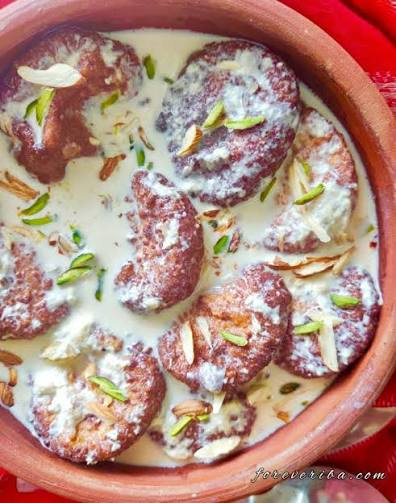
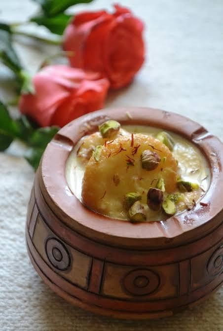

Chhappan Bhog — GI Tagged Sweet of Odisha
Rasabali
ରସାବଳୀ
"ଦୁଗ୍ଧ ଫେନ ନିଭ ଶ୍ୱେତ, ଦ୍ୟୁତି ଦୀପ୍ତ ନଭଃ ପ୍ରଭ"
"White as the foam of milk, radiant as the light of the sky."
— Traditional Odia temple verse on chhena-based sweets
Originating from the Baladevjew Temple of Kendrapara, Rasabali is one of the Chhappan Bhog offered to Lord Jagannath. Deep-fried, reddish-brown flattened chhena patties soaked in thickened, cardamom-scented milk. Awarded the GI tag in October 2023, this sweet is distinctly Odia — never to be confused with rasmalai.
Ingredients
- 500 g fresh chhena (homemade from full-fat milk)
- 3–4 tsp whole wheat flour (atta)
- 1 tsp semolina (sooji)
- 500 ml full-fat milk
- 250 g sugar
- 2 g green cardamom, freshly ground
- A few strands of saffron
- Oil or ghee for deep frying
- Sliced almonds and pistachios, for garnish
Instructions
To make chhena: Boil 1.5 litres of full-fat milk. Turn off the flame, add 2 tbsp lemon juice slowly while stirring. Once the whey separates, strain through a muslin cloth. Rinse with fresh water to remove sourness. Hang for 30 minutes to drain. Do not over-squeeze — the chhena should be moist.
In a wide plate, knead the chhena using the edges of your palms for 8–10 minutes until smooth with no grains. Add wheat flour and semolina. Knead again until a soft, pliable dough forms. This step is critical for the right texture.
Divide the dough into lemon-sized balls. Grease your palms lightly with oil and flatten each ball gently on your palm to form round, flat discs (tikkis) about 1 cm thick.
Heat oil or ghee in a kadai on medium-low flame. Fry the discs slowly until both sides turn a deep reddish-brown colour. Do not rush — low heat gives the characteristic colour. Drain and set aside.
In a wide pan, bring 500 ml milk to a boil. Reduce to medium-low and simmer, stirring frequently, until the milk reduces to roughly half its volume and thickens slightly. Add sugar and cardamom powder. Add saffron dissolved in a spoonful of warm milk. Stir well.
Add the fried rasabali discs to the simmering milk. Cook on low flame for 12–15 minutes. The discs will absorb the milk and become soft and tender.
Turn off the flame. Let it cool at room temperature. Garnish with sliced almonds and pistachios. Serve warm or chilled.